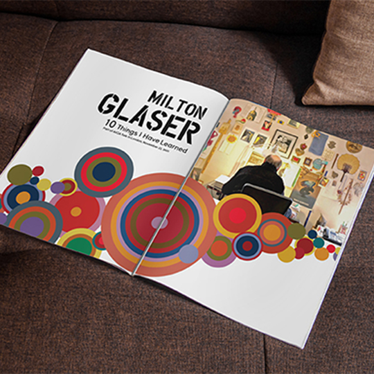

I'm a Designer and Developer bridging
over 10 years of combined nonprofit & corporate Project Management experience. I am passionate about
creative problem-solving, positive user experiences, and intuitive design.
About Me
My passion for the user experience (UX) is deep-rooted and present in the awareness that expectations
of a visually attractive, easily navigable website are unspoken. My approach to design is intuitive,
soulful, visual and optimized.
I have over a decade of nonprofit sector experience where my heart strings were constantly plucked by
the value of humanity. While attentive to organizational missions, I applied creative solutions to save
time, energy and money for the business, ultimately choosing UX design. Epiphanies bring change. I
returned to school, deepening my technical knowledge and passion for creativity via Web Design.
I have a BA in international studies from Hamline University, have traveled extensively and grown
a special connection to Jamaican culture. Hablo Español, love sewing, and dancing to live music.
Introspection and culture influence me! Oh…and I taught belly dancing!
Myers-Briggs MBTI
Extroverted: Energized by time with others
Intuitive: Focus on ideas and concepts
Feeling: Prioritize people and emotions
Perceiving: Prefer freedom and flexibility
Strengths Finder
Maximizer
Woo
Communication
Ideation
Adaptability
Portfolio
CLICK ON THE IMAGES BELOW for an overview of each website project I am highlighting for my portfolio; Lake Superior Spirits and Brews,
The Virtual Assistant, and White Pine National Park. Also, I have a section called Corporate Media, where you can see
some of my abilities to create print media items.
All
Web Design
UI/UX
Print
Lake Superior Spirits & Brews

Corporate Media
The Virtual Assistant
White Pine National Park
Get in touch
Thanks for visiting my site and checking out my work – I hope you feel that you learned a bit more about me. Do you have a project you want to talk about? Let’s grab a cup of coffee! I look forward to hearing from you!


{kind=link}
{kind=link}
{kind=link}
{kind=link}